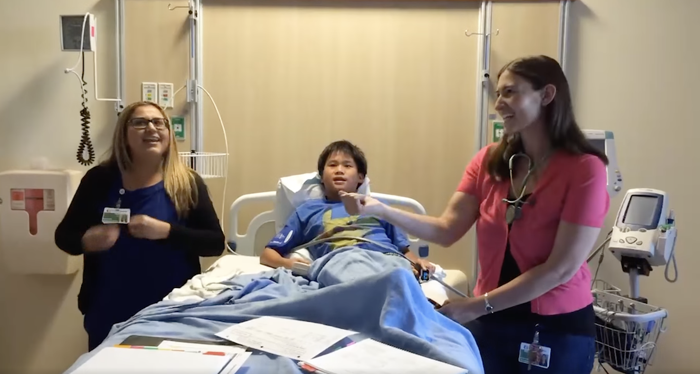

Rows: 46
Columns: 5
$ id <int> 1, 2, 3, 4, 5, 6, 7, 8, 9, 10, 11, 12, 13…
$ age <dbl> 20.5, 20.9, 9.2, 18.9, 15.6, 13.3, 17.3, …
$ baseline_wheat_ige <dbl> 13.3, 7.1, 30.8, 32.4, 38.6, 17.1, 90.6, …
$ vwg_oit <dbl> 1, 1, 1, 1, 1, 1, 1, 1, 1, 1, 1, 1, 1, 1,…
$ max_dose_mg <dbl> 1331, 1391, 1126, 960, 1197, 1175, 1052, …Randomized Experiments
Lecture 22
Josh Lim
Duke University
STA 199 Summer 2026: Session 2
Adapted from slides by Mine Çetinkaya-Rundel, Katie Solarz & John Zito
August 3, 2026
The problem of causality
Correlation ≠ causation
- So far, we have said to “avoid” causal language when describing the relationship between two variables
- Why? Because only in certain circumstances can we conclude causality
- Variables can be heavily correlated (remember Nicolas Cage) but clearly not causal
- These next two lectures explore some of the circumstances in which we can say “A causes B”
What’s going on here

Well yes

Confounding variables
- A confounding variable is an outside variable that affects both variables of interest, creating a false association between them
- Students who live in Hollows have more free time in the second semester → the confounder is senior status
- Athletes with larger caloric intake are more likely to have knee problems → the confounder is height/body size
- Come up with your own!
So how do we deal with confounding variables?
We can deal with confounders before or after we collect the data.
Design
- Meticulously plan your data collection and treatment assignment
- Eliminate possible confounder effects from the start
- Example: randomize who gets treatment so groups start out comparable
Modeling / Analysis
- Collect your data, then adjust for confounders statistically
- Include confounders as covariates in a regression model
- Example: control for age and sex when estimating a treatment effect
Key takeaway
Confounding variables make it hard to conclude that \(A\) causes \(B\)
But if we can remove or account for the effects of confounding — either by design or by modeling — we can conclude causality
Randomized Experiments
What is a randomized experiment?
A study in which the researcher assigns units (people, schools, hospitals, …) to treatment or control
Assignment uses a random mechanism — like a coin flip — not the unit’s own choice or the researcher’s judgment
This is in contrast to an observational study, where we observe but do not intervene
Examples: clinical drug trials, A/B tests, policy evaluations
Some definitions
\(Z \in \{0, 1\}\): treatment indicator — 1 if a unit receives treatment, 0 if control
\(X\): covariates — pre-treatment background variables (age, sex, baseline health, …)
\(Y\): outcome — the quantity we want to understand causally (recovery, test score, revenue, …)
Treatment group: units assigned \(Z = 1\)
Control group: units assigned \(Z = 0\)
Some jargon you’ll hear
Placebo: a “fake” treatment (e.g., a sugar pill) given to the control group; indistinguishable from the real treatment
Single-blind: participants do not know their treatment assignment
Double-blind: neither participants nor the researchers administering treatment know the assignment — guards against bias on both sides

Your turn
Using the paper (https://pubmed.ncbi.nlm.nih.gov/30389226/), identify the following:
- Cohort: Who are the study participants?
- Design: How was the data collected?
- Treatment and control (\(Z\)): What did each group receive?
- Outcome (\(Y\)): What is being measured?
- Covariates (\(X\)): What pre-treatment variables were recorded?
Example: The Wheat OIT Study
Nowak-Węgrzyn et al., Journal of Allergy and Clinical Immunology (2019) — https://pubmed.ncbi.nlm.nih.gov/30389226/
Cohort: 46 children and young adults (ages 4–22) with confirmed wheat allergy
Design: Multicenter, randomized, double-blind, placebo-controlled Phase 2 trial
Treatment (\(Z=1\)): Vital wheat gluten (VWG) oral immunotherapy — biweekly escalation to 1,480 mg wheat protein/day over 1 year
Control (\(Z=0\)): Matched placebo — participants and researchers blinded to assignment
Outcome (\(Y\)): Passing a 1,480 mg double-blind placebo-controlled food challenge (DBPCFC) at year 1
Covariates (\(X\)): Age, sex, baseline wheat IgE, threshold dose at baseline
The gold standard
Randomization is incredibly powerful
Treatment \(Z\) is assigned independently of everything: \(Z \perp X\)
This includes measured confounders and unmeasured confounders
Even if confounders exist, they are distributed (in expectation) evenly across both groups — so they don’t bias our estimate
Any average difference in \(Y\) between groups must be due to \(Z\), not a confounder
This is why RCTs are considered the gold standard for causal inference
Checking randomization: Covariate Balance
Randomization creates two comparable groups — the only systematic difference should be the treatment itself
We verify this empirically with a balance table (called “Table 1” in medical research)
Compare means and proportions of key pre-treatment covariates across the two groups
Good balance → confident that differences in \(Y\) are attributable to \(Z\)
Table 1: Wheat OIT Study
| Characteristic | Placebo (n = 23) | VWG OIT (n = 23) |
|---|---|---|
| Age (years), mean (SD) | 8.1 (3.9) | 7.8 (4.1) |
| Female, \(n\) (%) | 9 (39%) | 10 (43%) |
| Wheat IgE (kU/L), median | 31.4 | 29.8 |
| Threshold dose at baseline (mg), median | 200 | 200 |
- Groups look similar on all pre-treatment characteristics
- This is exactly what we expect under randomization
When covariate balance is violated…
If groups differ on \(X\) before treatment, we can’t be sure whether differences in \(Y\) are due to \(Z\) or \(X\)
Example: if the treatment group happens to be younger on average, better outcomes might reflect age — not the treatment
Solution 1: include the imbalanced covariate(s) in your regression model
Solution 2: rerandomize — if the initial draw produces an imbalanced allocation, redraw until balance is achieved (can be built into the design ahead of time)
Ok, so we have balance, now what?
Now our question is: does the change in our treatment affect our outcome \(Y\)?
I.e., does switching from the control group to our treatment group produce a meaningful change in \(Y\) on average?
-
We can estimate this directly as the difference in group means:
\[\tau = \bar{Y}_{\text{treated}} - \bar{Y}_{\text{control}}\]
Linear regression with a binary treatment
\[Y_i = \widehat{\beta_0} + \widehat{\beta_1} Z_i + \varepsilon_i\]
\(\widehat{\beta_0}\): predicted outcome in the control group (\(Z = 0\))
\(\widehat{\beta_1}\): estimated average treatment effect — the average change in \(Y\) when going from control to treatment
In fact, \(\widehat{\beta_1} = \bar{Y}_{\text{treated}} - \bar{Y}_{\text{control}}\) exactly
Data: Wheat OIT Trial
Note
This dataset is artificially generated to represent the structure of the real study. In practice, clinical trial data like this is Protected Health Information (PHI) — individually identifiable health data (e.g. diagnoses, lab values, treatment records) protected under HIPAA — and cannot be shared publicly.
Research question
Is VWG oral immunotherapy effective at increasing wheat tolerance?
More precisely: is there a significant relationship between VWG OIT treatment and maximum tolerated wheat protein dose?
\[H_0: \beta_1 = 0 \qquad H_A: \beta_1 \neq 0\]
Visualize

Model fit
Model interpret
\[\widehat{\text{max dose}} = \widehat{\beta_0} + \widehat{\beta_1} \times \text{VWG OIT}\]
Intercept: The estimated max tolerated dose for participants in the placebo group is \(\widehat{\beta_0}\) mg, on average.
vwg_oit: Receiving VWG OIT causes an estimated increase of \(\widehat{\beta_1}\) mg in max tolerated dose compared to placebo, on average.
Wait — our interpretation changed!
In every previous lecture, we said: “For a one-unit increase in Z, Y is predicted to change by \(\widehat{\beta_1}\), on average.”
Now, we say “A one-unit increase in Z causes Y to change by \(\widehat{\beta_1}\), on average.”
We’ve eliminated the effect of confounding via randomization, so any changes in \(Y\) are attributatble from the change in \(Z\)
Computing the CI for the treatment effect I
Calculate the observed fit:
Computing the CI for the treatment effect II
Take 1000 bootstrap samples and fit models to each one:
set.seed(1120)
boot_fits <- wheat_trial |>
specify(max_dose_mg ~ vwg_oit) |>
generate(reps = 1000, type = "bootstrap") |>
fit()
boot_fits# A tibble: 2,000 × 3
# Groups: replicate [1,000]
replicate term estimate
<int> <chr> <dbl>
1 1 intercept 225.
2 1 vwg_oit 942.
3 2 intercept 246.
4 2 vwg_oit 932.
5 3 intercept 269.
6 3 vwg_oit 943.
7 4 intercept 201.
8 4 vwg_oit 1021.
9 5 intercept 277.
10 5 vwg_oit 955.
# ℹ 1,990 more rowsComputing the CI for the treatment effect III
get_confidence_interval(
boot_fits,
point_estimate = observed_fit,
level = 0.95,
type = "percentile"
)# A tibble: 2 × 3
term lower_ci upper_ci
<chr> <dbl> <dbl>
1 intercept 173. 299.
2 vwg_oit 877. 1053.Is this result significant? How can we conclude signficance from confidence interval?
Setting hypotheses
Null hypothesis, \(H_0\): The slope predicting max tolerated dose from VWG OIT is 0 — treatment has no effect, \(\beta_1 = 0\).
Alternative hypothesis, \(H_A\): The slope is not 0 — VWG OIT has a significant effect on max tolerated dose, \(\beta_1 \neq 0\).
Simulate null distribution
Visualize null distribution

Get p-value
Make a decision
Based on the p-value, what is the conclusion of the hypothesis test?
Since \(p < 0.05\), we reject \(H_0\)
We have sufficient evidence of a statistically significant relationship between VWG OIT and maximum tolerated wheat protein dose
More precisely: we have evidence that receiving VWG OIT causes an increase in maximum tolerated wheat protein dose
Further covariate adjustment
If covariate balance is not satisfied, we can include those covariates in the model to adjust for them:
wheat_fit_adj <- linear_reg() |>
fit(max_dose_mg ~ vwg_oit + baseline_wheat_ige, data = wheat_trial)
tidy(wheat_fit_adj)# A tibble: 3 × 5
term estimate std.error statistic p.value
<chr> <dbl> <dbl> <dbl> <dbl>
1 (Intercept) 312. 27.8 11.2 2.22e-14
2 vwg_oit 947. 34.2 27.7 4.57e-29
3 baseline_wheat_ige -1.84 0.328 -5.62 1.31e- 6Limitations of RCTs
Generalizability: The wheat OIT trial enrolled 46 children and young adults at a small number of academic medical centers — results may not generalize to all ages, allergy severities, or healthcare settings
Feasibility and cost: RCTs require careful coordination, long follow-up periods, and significant funding — not every research question can be studied this way
-
Ethical constraints: We can only randomize participants to treatments we believe are plausibly safe — we cannot randomly assign people to harmful exposures
- Example: we cannot randomize children without wheat allergies to develop an allergy just to study the effect
- Borderline cases (e.g., deliberately inducing allergic reactions in a food challenge) require careful IRB oversight and informed consent
Application Exercise
ae-20
Hmm, but why is this study interesting
Recall
- Participants aged 4-22
- Study was dated in 2018
- Took 2 years to complete all data collection
Well

Lore
- I was part of the study cohort when I was 12 years old
- Learned what a treatment and control was the “hard way”
- Some of the scariest moments of my life
- But one of the most life-changing experiences ever
- Drastically improved my quality of life (I can eat bread, pasta etc now)
- And that’s my why (I research)